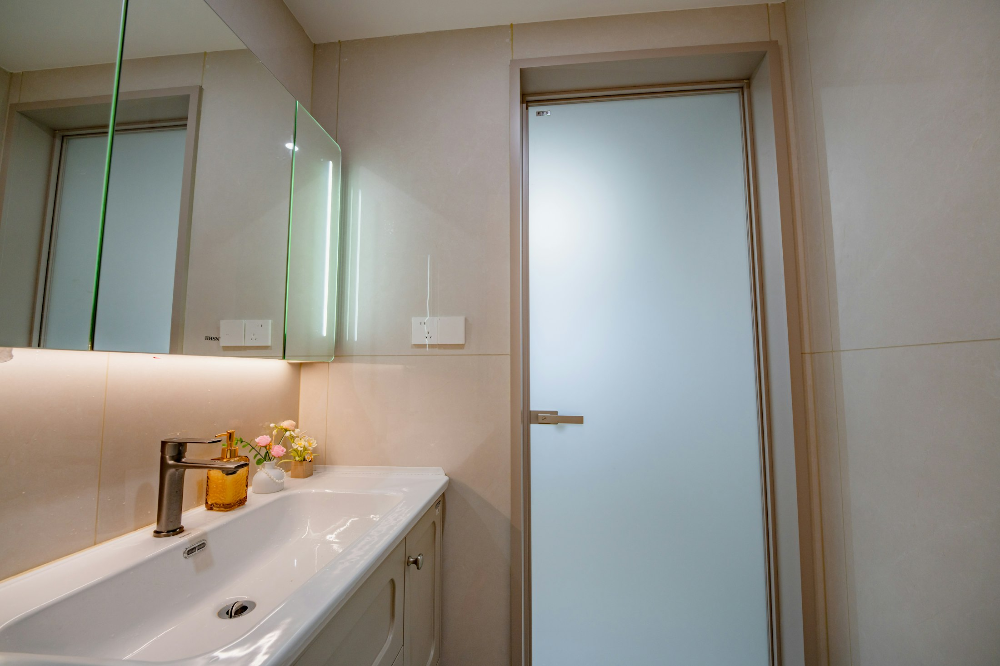
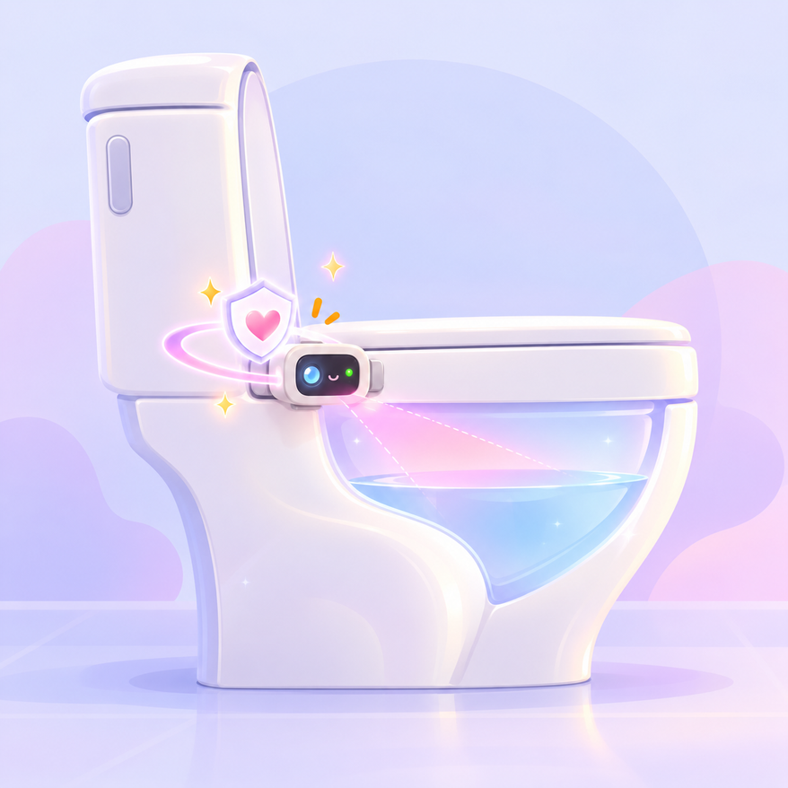
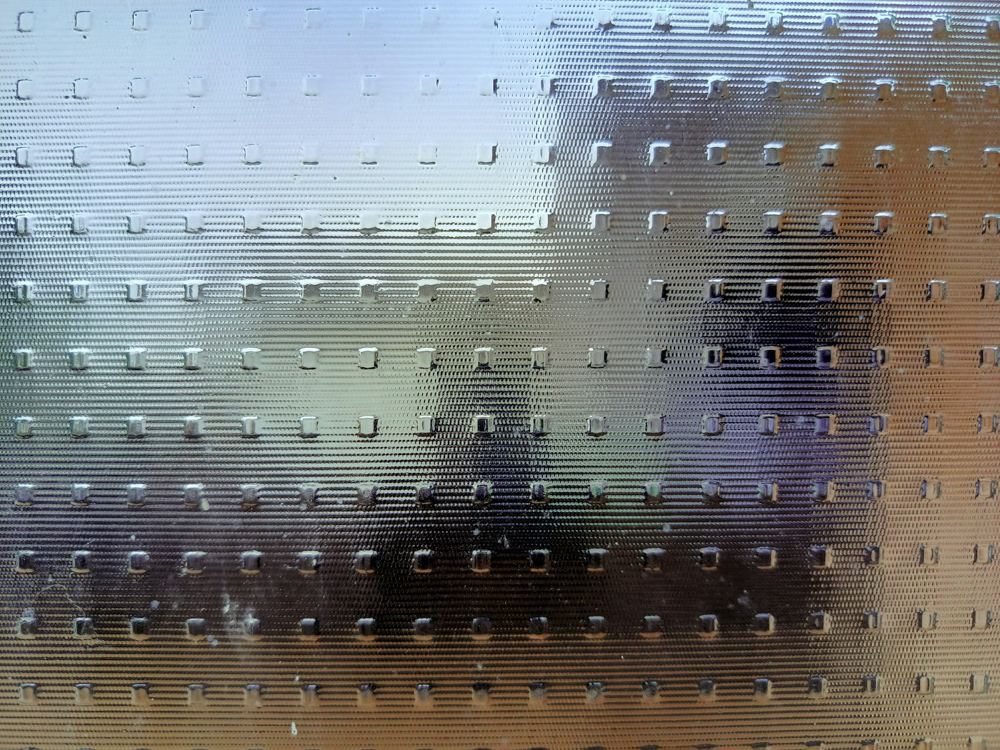

Safe by design
Your bathroom is private. PeekaPoo keeps it that way — physically and digitally.
See What Stays LocalWait… no one else can
see these photos, right?
Right. PeekaPoo is safe by design — physically and logically.
Physically safe
- Sealed protective enclosure
- Low-voltage components
- Moisture-resistant design
- Safe for bathroom use

Logically safe
- On-device AI processing
- Raw images stay local
- No raw image upload — ever
- Cloud stores only scores & trends
What leaves your bathroom —
and what never does
Every visit follows the same path. The only thing that travels is the insight.
-
Sense
Camera + gas sensors capture each visit, without contact.
-
Analyse on-device
Atlas 200I DK A2 runs the models locally.
Raw image upload
Never happens. Images stay on the device. -
Scores & trends
Only features, scores and trends are kept.
-
Huawei Cloud
Stores your history and sends signed OTA updates.
-
Your app
You see the result. A clinician only on a red flag.

Raw images never
leave the device
Images are analysed right next to your toilet. What reaches the cloud is already reduced to numbers — enough to track your trends, never enough to see what the camera saw.
On your device
- Raw camera images
- Vision & gas model inference
In the cloud
- Features, scores & trends
- Signed OTA updates
Answers to the
awkward questions
Still wondering about something? Ask Team InsideOut.
Does PeekaPoo upload photos of my stool?
No. Images are analysed on the device itself. Only features, scores and trends are sent to the cloud, and raw images are never uploaded.
Does anything touch me or the sample?
No. PeekaPoo reads colour, shape and consistency with a camera and picks up odour signals with a gas sensor array — completely non-contact.
Who can see my results?
You, in the PeekaPoo app. A clinician only comes into the picture when a red flag is raised.
Is it safe to install in a wet bathroom?
Yes. The electronics sit in a sealed, moisture-resistant enclosure and use low-voltage components designed for bathroom use.
How does the device get updated?
Through signed over-the-air updates from Huawei Cloud, so the device only installs software that comes from us.
Is PeekaPoo a medical device?
No. PeekaPoo is a wellness screening and triage aid. It helps you notice changes early and decide when to talk to a professional — it does not diagnose disease.